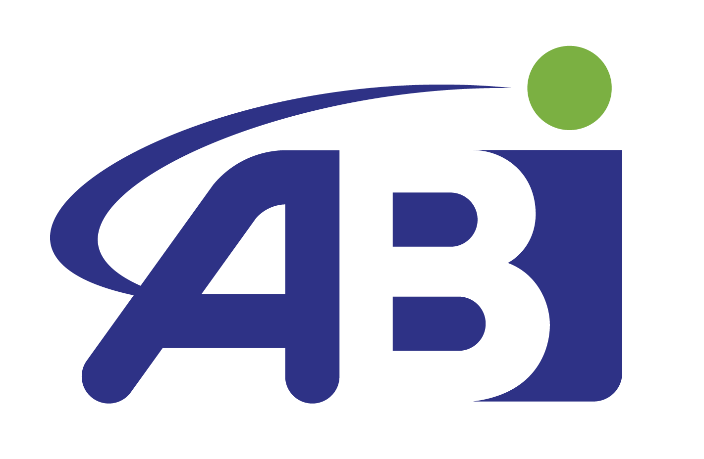

Please select the tool your technician directed by your technician. ScreenConnect is the right choice for most sessions.
Not sure which one to use? Check with your assigned technician before starting — they'll tell you exactly which option applies to your issue.